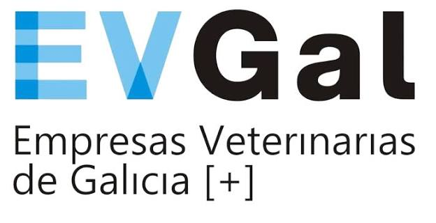

€
Retribución+12,49 % acumulado
Incremento aproximado 2025–2028 para la mayoría de categorías, antes de posibles revisiones por IPC.

Abrir BOEQué cambia en salarios, jornada, disponibilidad, permisos y carrera profesional en los centros y servicios veterinarios.
Lo esencial, en un vistazo
El convenio está vigente del 1 de enero de 2026 al 31 de diciembre de 2028. Las cifras salariales de 2026 tienen efecto retroactivo.
Incremento aproximado 2025–2028 para la mayoría de categorías, antes de posibles revisiones por IPC.
1.780 h en 2026, 1.770 h en 2027 y 1.760 h en 2028.
El máximo pasa de 2.492 h a 2.112 h en 2028: impacto directo en la organización de guardias.
Desde 2027, con 5 días de preaviso y respeto obligatorio de los descansos diario y semanal.
Tablas +4 %, aplicación retroactiva desde enero. La jornada y el máximo de disponibilidad se mantienen respecto a 2025.
Calculadora salarial
Importes brutos de tabla a jornada completa; el anual incluye las dos pagas extraordinarias. No incluye carrera, antigüedad consolidada, nocturnidad, festivos ni otros complementos individuales.
| Categoría | 2025 | 2026 | 2027 | 2028 |
|---|
Pagas: dos extraordinarias de salario base + puesto + antigüedad consolidada, en la primera quincena de junio y diciembre. Su prorrateo en 12 mensualidades requiere pacto (art. 26). Los importes no son salarios netos.
IPC: si supera el 4 % en 2026, 2027 o 2028, el art. 24.4 prevé un pago del diferencial, con tope del 1,25 %, en el primer trimestre siguiente. El texto fija como referencia el salario bruto anual del anexo III para la categoría; no se aplica automáticamente en este simulador.
Garantías: el art. 11 establece la no absorción ni compensación de las retribuciones del convenio. La antigüedad consolidada y el complemento personal de garantía no se revalorizan (arts. 33–34).
Ver tablas originales: anexos I–III ↗Carrera profesional
Es voluntaria, individual y reservada al personal sanitario. Reconoce formación y desarrollo profesional mediante 8 escalas y un complemento económico.
El simulador consulta importes y requisitos; no acredita elegibilidad ni reconoce una escala. El complemento se reduce según jornada contratada (art. 76.2); los puntos mostrados no se prorratean.
Antigüedad mínima en el nivel profesional para acceder al sistema ordinario.
Permanencia mínima en cada escala antes de optar a la siguiente.
Al menos la mitad de los puntos debe obtenerse en los últimos 3 años evaluados.
No existe límite de personas que puedan ser reconocidas en cada escala.
Durante los 18 meses posteriores a la publicación puede solicitarse una escala sin recorrer antes todas las inferiores. Debe acreditarse antigüedad en esa empresa y nivel profesional anterior al 1/1/2023: escalas 1–8, respectivamente, 2,5; 5,5; 8,5; 11,5; 14,5; 17,5; 20,5 y 23,5 años. También se exige formación: se contempla la recibida en los ocho años anteriores a la entrada en vigor. Cada actividad solo puede usarse para una escala. Quien ya tuviese una escala reconocida a la entrada en vigor la conserva y no puede acogerse a esta vía (art. 74).
Importante: la escala reconocida no cambia el puesto ni las funciones. Las controversias se someten a la Comisión Paritaria.
*El Anexo V publica puntuaciones 2026 y 2027. Para 2028 no figura una tabla equivalente. Desde el 1/7/2028, quienes acrediten al menos seis años de servicios en la empresa obtendrán 100 puntos de cara al acceso al «nivel 1» (terminología de la DA cuarta). No es una concesión automática de escala ni una afirmación de que 100 puntos sean suficientes. Para ACV, el procedimiento podrá prolongarse según evolucione la acreditación.
No es un incentivo discrecional por facturación. El reconocimiento se rige por la antigüedad, la formación acreditable y el procedimiento del convenio. La empresa realiza el proceso, a solicitud de la persona trabajadora, en un máximo de 30 días naturales (arts. 73–77).
Formación: 1 punto/hora en formación para el empleo; 5 por crédito de formación continuada sanitaria acreditada; 350 por máster oficial; 475 por tesis doctoral; 1,5 por hora de docencia en formación para el empleo o universitaria; 25 por artículo indexado; 15 por máster propio universitario de al menos 60 ECTS; 50 por asesorar/evaluar en acreditación por experiencia laboral; 10 por póster o comunicación en congreso científico acreditado. No cualquier curso privado equivale automáticamente a formación para el empleo. Las actividades no sanitarias de los tipos admitidos requieren autorización previa escrita de la empresa (art. 77 y anexo V).
ACV: la DA quinta.2 exige certificado profesional o titulación oficial para desarrollar carrera y percibir sus complementos de carrera y puesto. La empresa debe notificar formalmente por escrito a las personas encuadradas en esta categoría. El plazo transitorio de tres años para obtener la acreditación comienza con la publicación del primer proceso autonómico posterior a la publicación del convenio. Si transcurre sin acreditación ni trámites acreditables, no podrán seguir realizando funciones ACV; el posible cambio de categoría debe respetar los derechos laborales y retributivos adquiridos. No se deriva de esta guía una reducción automática de nómina.
Errata aparente: la tabla de mínimos de docencia/publicaciones de 2027 termina con encabezados «Escala 8» y «Escala 10», pese a existir ocho escalas. La web no reasigna esas columnas. Solicitar aclaración a la Comisión Paritaria antes de aplicar los requisitos afectados. Para 2028 falta tabla de puntos.
Otra diferencia de tabla: la escala 1 del veterinario generalista tiene importes distintos a los del director; se reproducen literalmente, sin sustituirlos por un cálculo del 4 %.
Arts. 73–77 ↗ · Anexo V completo ↗Puntos críticos
Documentación
Esta guía resume el convenio para facilitar su consulta. Ante un conflicto interpretativo prevalece el texto publicado en el BOE.